1917—American Dressmaking Step by Step
by Mme. Lydia Trattles Coates
Chapter 10—Ornamental Work
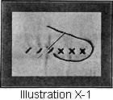Lesson 240—The Cross-Stitch (Illustration X-1)
To Make the Cross-stitch
The Cross-stitch is made by carrying one slant stitch across the angle of the other. The accompanying cut shows the proper manner of placing the needle and carrying the thread. The beauty of this style of needlework depends upon having all the upper stitches run in the same direction. The Cross-stitch is an easy and effective stitch for use on children's garments.
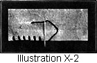Lesson 241—The Blanket Stitch (Illustration X-2)
The Blanket Stitch is also the Buttonhole or Loop Stitch and is used for edge work.
To Make the Blanket Stitch
- Begin at the left-hand side of the work, a little distance up from the edge. Hold the thread down with the left thumb, in the form of a loop.
- Draw the needle through under the edge of the material and through the loop.
- Again hold the thread down with the left thumb.
- Place the needle a little distance from the first stitch, and again bring it down through the loop.
- Continue with these stitches.
Variations of this stitch are given in the following lesson.
Lesson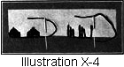 242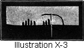—Variations of the Buttonhole or Loop Stitch (Illustrations X-3 and 4)
Instead of taking the edge Loop Stitch of uniform length as in the Blanket Stitch, one may vary the length of the stitches as shown in the accompanying illustrations, grouping them close together or spacing them. Follow directions as for the Blanket Stitch (Lesson 241).
These variations of the Blanket Stitch make an effective finish on flannel or scrim collars, blankets, comforters, or bath-robes when the material is too heavy to turn.
 Lesson 243—The Outline Stitch (Illustration VI-11, P. 64)
Lesson 243—The Outline Stitch (Illustration VI-11, P. 64)

The Outline Stitch is the Half Back Stitch taken upward or away from you. It may be done in two ways—one in which a heavy effect is produced, and another which, if carefully executed, will have the effect of an unbroken line.
Embroidery threads are twisted from left to right or from right to left. According to the twist of the thread either of the two effects mentioned is produced. If the stitch is taken with the twist of the thread, the unbroken line or etching outline is produced; if taken contrary to twist, the heavy or corded outline is the result.
The reason why there are often unsatisfactory effects produced is that the needle is not kept in a perfect line with the design to be outlined, or the thread is not kept to the same side of the needle.
Many beautiful effects can be achieved by this simple stitch. Whole designs may be outlined, or the stems may be outlined and the flowers made solid, whichever may be preferred.
To Make the Outline Stitch
- Begin at the bottom of the work and fasten the thread with a few running stitches.
- Throw the thread over to the left or right of the needle, and place the needle with the point straight toward you.
- Take a short stitch toward you and draw the thread, being careful not to draw too tightly.
- Again, throw the thread to the left or right of the needle, whichever way you have started the work, and take another stitch toward you, and continue in the same manner.
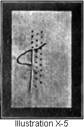Lesson 244—The Seed Stitch (Illustration X-5)
The Seed Stitch is made by taking small half or quarter back stitches covering the leaf or petals of a design or monogram. The rows must be evenly spaced and the stitches in each row fall midway between the stitches of the previous row.
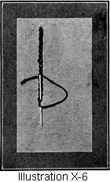Lesson 245—The Chain-Stitch (Illustration X-6)
The Chain-stitch is a closed link or closed loop stitch. This stitch is very useful for padding embroidery scallops, putting in hems, and for many purposes where an ordinary stitch would not be appropriate. When correctly made, it is quite ornamental.
To Make the Chain-stitch
- Fasten the thread on the underside, and at the top of the work, and work downward.
- Draw the thread through to the right side.
- Hold the thread down with the thumb of the left hand.
- Place the needle again exactly where it was brought through, and take a short straight stitch downward, taking care not to draw the thread too tightly.
- Again place the needle inside of the loop, holding the thread down with the thumb of the left hand and bring it out just below the previous loop made, which forms another loop.
- Continue with these loop stitches.
In the Chain-stitch the needle is always set straight up and down just inside the previous loop, and is brought out just outside of the previous loop. On the reverse side, the appearance should be of uneven basting stitches.
Lesson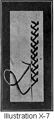 246—The Feather Stitch (Illustration X-7)
To make ornamental stitches of this character, it is best to study and practice carefully the Buttonhole or Loop Stitch.
To Make the Feather Stitch
- Fasten the thread under the work at the top of the design.
- Then allow the thread to fall downward into the form of a loop, holding down the loop with the left thumb.
- To one side of where the thread came through, take a stitch straight up and down, holding the loop with the thumb.
- Just below where the thread came through, carry the thread across to the opposite side. Bring the thread upward, forming a loop, and hold down the loop with the left thumb.
- Take a straight stitch inside of the loop, and then carry the thread across to the opposite side, and continue in the same way.
Should one desire the slanting effect, place the needle on a slant instead of on a straight line.
In all of this kind of work the great trouble of the beginner is inability to keep a perfect line.
It is then best to make a row of bastings on each side of where one wishes the work to appear. The stitches then are taken inside of these lines, and the work does not widen or spread out.
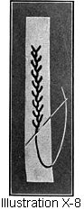Lesson 247—The Briar Stitch (Illustration X-8)
The Briar Stitch is made in the same manner as the Feather Stitch, except that a slant stitch is taken instead of the straight stitch on each side of the work.
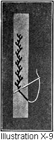Lesson 248—Double and Triple Briar Stitch (Illustrations X-9 and 10)
The Double or Triple Briar Stitch is made exactly on the same principle as the Single Briar Stitch. The only difference is that in the Double Briar Stitch, two stitches are taken instead of one, the second stitch being taken outside of the other stitch. (Illustration X-9.)
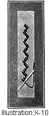The Triple Briar Stitch has three stitches on each side, the third stitch taken outside of the second. (Illustration X-10.)
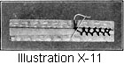Lesson 249—Fagoting (Illustration X-11)
Fagoting is done in many ways. Its design may be very simple, as shown below, or it may be nearly as elaborate as drawn work. It is used to join ribbons, folds, bands, or braids.
To Make the Plain Fagot Stitch
- Baste the work on thin oilcloth or stiff paper, basting the two edges as far apart as you wish the width of the fagoting, as the edges must be kept at an even distance.
- Bring the thread up through the edge of the fold.
- Draw the thread diagonally across to the opposite edge and hold down with the thumb of the left hand.
- Place the needle through the fold, bringing it out through the under edge of the fold, over the thread held down by left hand. Proceed to opposite side, making the thread fall as shown in the illustration.
The Plain Fagot Stitch is another form of Buttonhole Stitch, except that the needle points in one direction for the first stitch, and in the opposite direction for the next stitch. Continue in the same manner.
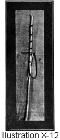Lesson 250—Couching (Illustration X-12)
Couching is made by taking crosswise stitches an equal distance apart over strands of heavy thread or cord.
Lesson 251—Outlining Embroidery Designs and Scallops (Illustrations X-13 and 14)
After the scallops or designs are stamped, they are outlined with small running stitches just inside of the stamped line. Use filling cotton of a size or as many strands as will give the work the desired effect.
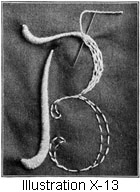Lesson 252—Padding Embroidery Designs and Scallops (Illustrations X-13 and 14)
Padding is done with the Uneven Basting Stitch and the Chain-stitch. Take the short stitch underneath in order to give the raised appearance on the right side. In padding, pad the centers of the scallops heavier than the edges or the points, and pad the center of the design heavier than the edges. Always pad in the opposite direction to the way the stitches will fall in the finished work.
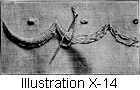Lesson 253—Buttonholing, Scallop Embroidery, or Loop Stitch (Illustration X-14)
This stitch is the basis of most ornamental stitches, and can be applied in innumerable ways to make articles attractive. It is so simple that even children are able to make very pretty pieces of work, while an older person can in a few hours learn to do quite creditable embroidering.
To Make the Buttonhole Stitch, or Loop Stitch, or the Scallop Embroidery Stitch
Study carefully the rules for outlining and padding. After the top and bottom lines of the design have been outlined and each scallop has been correctly padded, proceed as follows:
- Begin at the left-hand end of the work, or if working on a round piece, begin with the center of any scallop and work from left to right.
- Fasten the thread with a few running stitches along one of the scallops.
- Place the needle straight up and down over and back of the top line of the scallop.
- Hold the thread in the form of a loop with the thumb of the left hand.
- Bring the needle out through the loop and exactly under the bottom row of outline stitches.
- Repeat this work, slanting the stitches just enough so they will come on a perfectly straight line on both the center and the top points of the scallop.
Lesson 254—Solid Embroidery (Illustration X-13)
To Make Solid Embroidery
- Stamp, draw, or transfer the design in the place desired.
- Follow the outline with very small running stitches.
- Pad the design with uneven basting stitches, working in the opposite direction from the way the design will be finished. (Lesson 40.) Much of the beauty of raised solid embroidery depends upon proper padding and the careful outlining of outside lines.
- When padding is completed, one may carry the thread, either on the straight or on the slant, entirely across the leaf, petal, or line of the design.
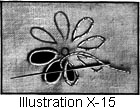Lesson 255—The Overcast Eyelet (Illustration X-15)
Use either a double or a single strand of the floss or thread.
To Make the Overcast Eyelet
- Make small running stitches entirely around the stamped eyelet, making the stitches follow the curve very carefully.
- If the eyelets are round, punch them with a stiletto, and keep shaping as you work. If they are oblong, slash through the center and shape as you work. If a heavy effect is desired, pad the eyelet.
- The eyelet is then overcast. Draw the thread quite tightly, but do not let the stitches crowd on top of each other. Make all stitches lie flat, close and even.
- Fasten the thread on the underside with two or three loop stitches taken through the threads of the overcasting stitches, and not through the material.
Lesson 256—The Buttonhole Eyelet
When you have eyelets through which to run ribbon, and the slash seems too wide for overcasting to be effective, buttonhole the eyelet. Overcasting should not be employed if the eyelet is over 3/8-inch long.
The buttonholed eyelet is not only more durable, but will be much prettier for the longer eyelets, when they are used instead of beading.
On large or long designs such as daisy designs, which are made in eyelet embroidery, many good embroiderers buttonhole rather than overcast these eyelets, and the effect is much more satisfactory.
Use the ordinary Loop Stitch as taught in Lesson 253.
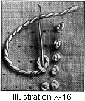Lesson 257—The French Knot (Illustration X-16)
To Make the French Knot
- Bring the thread through from the underside of the material.
- Hold the needle in the right hand and the thread between the thumb and first finger of the left hand. Twist thread around needle as many times as necessary to produce the size of knot desired.
- Draw the thread quite tightly around the needle. Still holding the thread, place the needle again very close to where it was first brought through.
- Draw the needle through to the underside and take a neat back stitch to hold the knot secure.
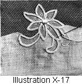Lesson 258—Appliqué Work (Illustration X-17)
To Do Plain Appliqué Work
- Baste chiffon, linen, or any desired material onto the garment.
- Stamp the design on the material basted onto the garment.
- Baste around the design and cut away from surplus material.
- Buttonhole the design, buttonholing through both applied material and the garment, having the buttonholed edge of the stitch come to the outside edge of the design.
Lesson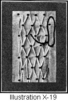 259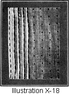—Smocking (Illustrations X-18 and 19)
There are many kinds of smocking, but only the plain Smocking is given.
To Make Smocking
- Stamp the material with a smocking design or dot at equal intervals.
- Baste tucks down each row of dots basting about 1/8-inch from edge.
- Begin at the top of the first and second rows of tucks and catch the two edges of the tucks together with three overcasting stitches taken exactly over each other.
- Carry the needle downward under the first tuck, skipping a row of dots, and again catch the top edges of the tucks together with three overcasting stitches taken over each other.
- Carry the needle downward under the tuck and proceed as in step 4, and continue until the first and second tucks have been joined together.
- Then join tucks two and three together in the same manner, being careful that the overcasting stitches come on the dots between the rows of overcasting stitches which were made when the first and second tucks were joined.
- When the smocking is finished, remove the basting threads which formed the tucks.